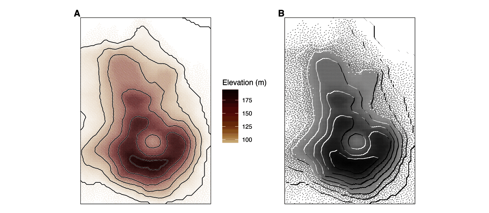
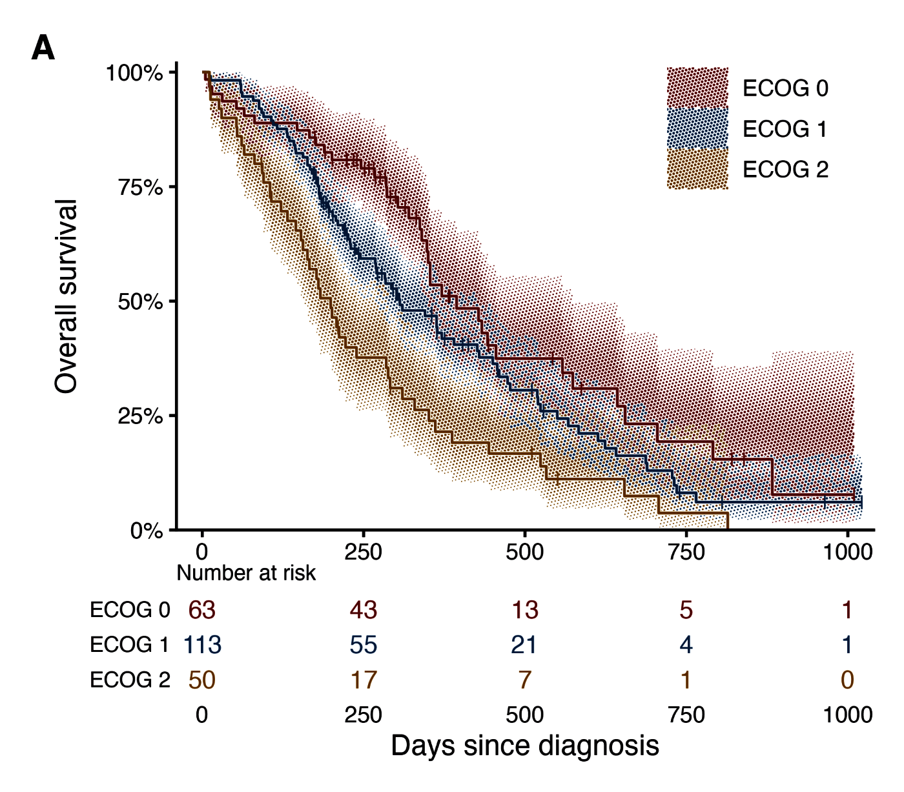
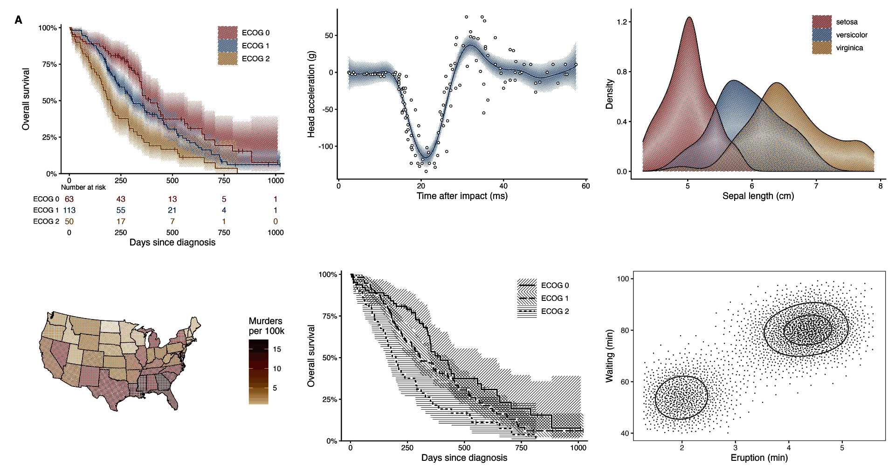
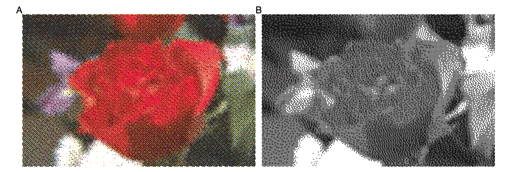
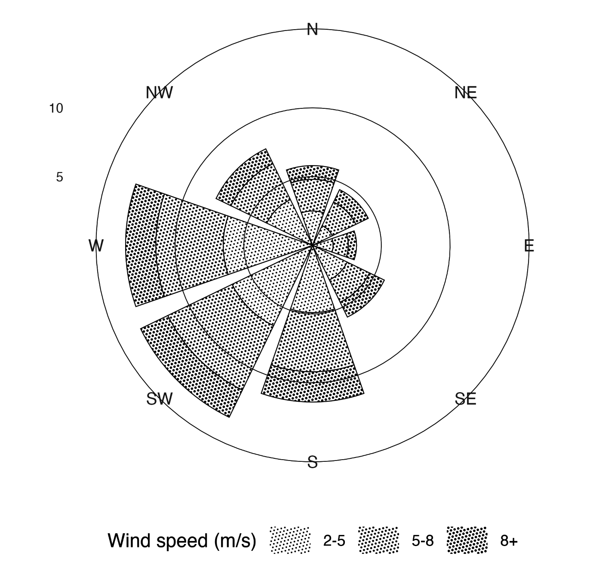
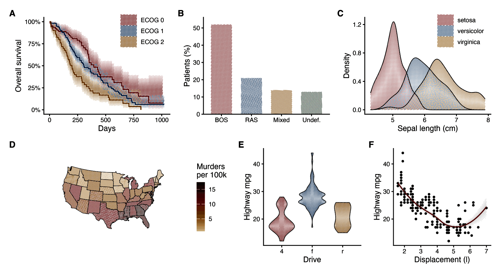
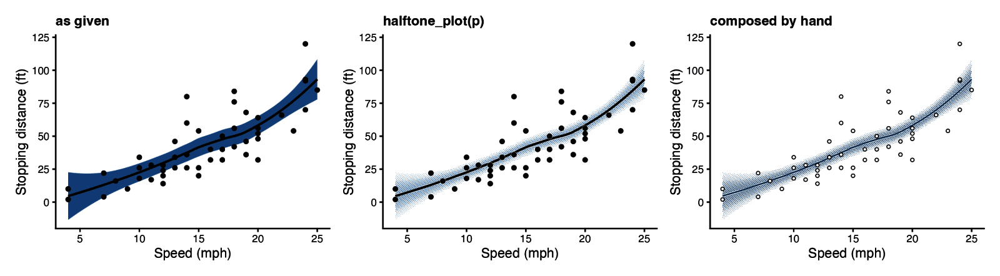
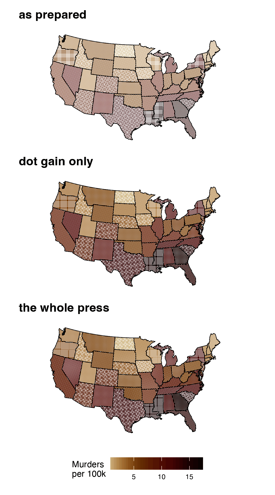
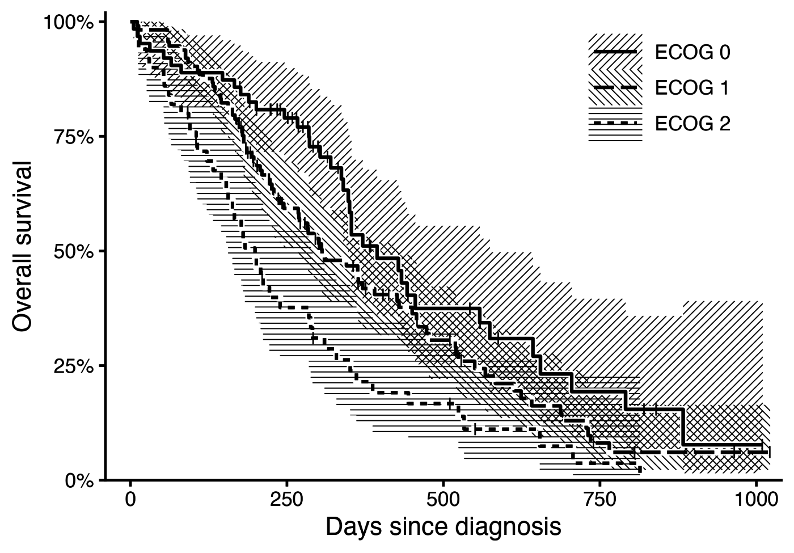

Halftone fills for ggplot2. The package places dots or hatch lines at draw time on a lattice with a physical pitch in millimetres. This is what separates it from ggfx, whose with_*() filters run on the rasterised layer, so their dot size is in pixels and changes with output size. A figure saved at 89 mm and at 183 mm gets the same screen, not a scaled one. Overlapping groups are printed on one lattice so that every group stays visible.

A Kaplan-Meier plot of the North Central Cancer Treatment Group lung cancer data (Loprinzi et al. 1994) at journal size: 89 mm, 600 dpi, theme_classic(base_size = 8). Three 95% confidence bands drawn with with_halftone(geom_ribbon()), step curves with with_halo(), censor marks and a risk table from km_steps(), km_censor() and km_risk().
Install
remotes::install_github("kinelhu/gghalftone")
# or
pak::pak("kinelhu/gghalftone")It has C++ kernels, so installing from source needs a compiler: Rtools on Windows, the command line tools on macOS. Rendering needs ragg.
From a local clone, skip the download:
While changing the package itself, skip the install:
devtools::load_all("~/Dev/gghalftone")In an renv project
renv will not see a package that is not in a repository, so give it one. Build a tarball and put it in the project’s cellar:
cd ~/Dev/gghalftone && R CMD build .
mkdir -p ~/my-project/renv/cellar
cp gghalftone_*.tar.gz ~/my-project/renv/cellar/Then, in the project:
renv::install("gghalftone")
renv::snapshot()The lockfile records "Source": "Cellar", and renv::restore() reads the tarball back out of renv/cellar/.
Two things to watch. renv’s own renv/.gitignore lists cellar/, so the tarball is untracked by default and a fresh clone restores against a file that is not there. Commit it deliberately:
And bump the Version: in DESCRIPTION whenever you rebuild, or renv keeps the copy it already has.
Usage
library(gghalftone)
# Screen the fill of any layer: ribbons, areas, bars, densities, polygons, sf.
s <- km_steps(survfit(Surv(time, status) ~ ecog, data = d))
ggplot(s, aes(time, group = strata)) +
with_halftone(geom_ribbon(aes(ymin = lo, ymax = hi, fill = strata))) +
with_halo(geom_step(aes(y = surv, colour = strata))) +
theme_classic() + theme_halftone()
# Simple features work like any other layer.
ggplot(counties) + with_halftone(geom_sf(aes(fill = rate)))
# Screen a gridded field. Colour scales apply to the field; dots inherit the colour.
ggplot(field, aes(x, y, z = value, colour = value)) + geom_halftone()
# Draw one tone disc per point.
ggplot(markers, aes(cluster, gene, tone = expression, size = pct)) + geom_spot() + scale_tone_continuous() + scale_radius()
# Encode a variable as screen angle and dot shape instead of colour.
ggplot(f, aes(x, y, z = z, screen = series)) + geom_halftone() + scale_screen_discrete()
# Draw a line screen.
ggplot(vol, aes(x, y, z = z)) + geom_halftone(shape = "line", angle = 30)
Left to right, top to bottom: the Kaplan-Meier plot above, a smooth with its confidence band, three densities, a choropleth, the same Kaplan-Meier plot in one ink, a blue-noise stipple. All are produced by prototypes/gallery2.R, which overrides a default only where the figure needs it.
Defaults
The defaults encode these rules. Each one was chosen by comparing renders at 600 dpi.
- Pitch is 0.35 mm (73 lines per inch). At 0.6 mm the screen reads as a dot pattern. At 0.25 mm it reads as a flat tint and takes about 1.8 times as long to draw.
-
Tone is continuous. Dot area follows tone exactly. Set
levels = kto quantise and dither with an ordered (Bayer 1973), blue-noise (Ulichney 1993) or error-diffusion (Floyd and Steinberg 1976) matrix, for examplelevels = 1for a stipple. - No feature is smaller than 0.09 mm (0.25 pt), the minimum line weight in journal artwork guidelines (Nature Portfolio; Elsevier). Below that tone, cells are dithered at the minimum size, so light regions become sparse dots or broken hairlines rather than grey pixels.
-
The tone profile follows the geometry. Bars, areas, polygons and maps are flat, because their interior is the value. Ribbons follow the likelihood of the estimate: full tone on the estimate, 0.146 at a 95% limit. Densities and violins get a soft vignette so that overlapping groups stay legible. A mapped
screenis always flat. - Tiling geoms get a screen as well as a fill. On bars, areas, polygons and tiles, each fill also gets its own screen angle and shape, so the figure survives greyscale printing.
- No lattice axis is horizontal or vertical. The hex lattice is rotated 15 degrees and the square lattice 45 degrees, so bar tops and step plateaus do not alias against a row of dots.
- Overlapping groups share one lattice. Two inks alternate in a checkerboard. Three inks use the hex lattice’s three-colouring, so no two neighbouring dots share an ink. Beyond three inks, use hatch angles or facets.
- Alpha sets coverage. A fill at 30% alpha prints as a 30% screen. The output holds no partial transparency.
- Screens are clipped to the fill. Dots never overhang an outline.
- Line screens are flat. Hatching has constant weight and a hard edge. A tapered hatch reads as fringe.
Beyond charts

A photograph twice. A: four-colour process, geom_halftone_cmyk() separating the image into cyan, magenta, yellow and black at the classic screen angles, which produces the rosette. B: one ink with Floyd-Steinberg error diffusion, the newspaper screen. Both from halftone_raster().

A wind rose in one ink: direction by angle, frequency by radius, wind speed by tone. Speed is ordered, so it gets tone; a reader cannot rank three hatch angles. The lattice is computed in millimetres on the panel, so the coordinate system does not affect it. Legend keys are a sample of the screen at its real pitch and weight.
More of these, including an sf choropleth, ridgelines, violins and a demonstration that the screen does not change with output size, are in prototypes/showcase.R.
Screen a whole plot
halftone_plot() takes a finished plot and returns it printed. It screens every filled layer, draws a paper hairline under every line that crosses a screen, and adds the theme modifier.
halftone_plot(p)
halftone_plot(p, pitch = 0.6, shape = "line") # any with_halftone() argumentThe treatment follows the geom. Ribbons, areas, densities, bars, tiles, polygons, sf geometries, violins, boxplots and smooths are screened, each with the tone profile its geometry calls for. Lines, paths, steps, contours and points are haloed, but only where a screen sits under them: anything drawn on a screen gets the printer’s knockout channel. Text, error bars, rugs and reference lines are left alone, and so is any geom it does not recognise, because an unknown layer draws exactly as it did before. The worst case is an unscreened layer rather than a wrong figure.
It screens the fill and chooses no colours. Line weights, point shapes and any colour you set or mapped stay as the plot set them, so a figure built for the screen from the start still reads better. Applying it twice changes nothing, and a layer you wrapped yourself is left as you wrapped it.
A colour you did not choose is the theme’s business rather than this function’s. On ggplot2 4.0 an unmapped geom colour comes from theme(geom = ), whose stock accent is the blue geom_smooth() draws its line in. theme_halftone() sets that accent to the package’s ink, so the one colour that would sit outside the register comes into it.

Six panels built the way anyone would build them, composed with patchwork, then handed to halftone_plot() once. Nothing in them is written for the screen: the fills are mapped, the lines are ggplot2’s defaults. Each mapped fill also picks up its own dot shape and lattice angle, which is visible at full size.

Left: the plot as given. Middle: halftone_plot(p), one call. Right: the same figure composed layer by layer with the package’s inks and weights.
Press artefacts
with_press() draws the screen as a press puts it on paper, not as the plate describes it. Wrap it around a halftone layer, a plot, or a patchwork; given more than one layer, each is pressed as its own plate.
- Dot gain is the tone value increase at a 50% screen: about 0.15 for offset on coated stock, 0.35 on newsprint. It is applied to coverage, the fraction of paper the screen inks, which is what a densitometer reads and is not the tone the screen was asked for. Coverage stops at the sheet, and that is what fills a shadow in: past about 0.2 the dark dots grow beyond the lattice, touch, and print as solid with pinholes.
-
Fillet is the ink bridge where two dots meet, as a fraction of the pitch. Wet ink does not cross in a sharp cusp; surface tension pulls a curve across the notch. It acts only where dots meet, so it needs
gainabove about 0.2 to give it something to bridge. Atgain = 0.25: 0.02 rounds the cusp, 0.04 draws a clear bridge, 0.08 pulls the fill-in down into the midtones. It needs the polyclip package. - Slur smears each dot into a capsule along the direction the sheet travelled, which is what a press running fast does.
-
Mottle is the slow variation in ink density across the sheet, smooth over
mottle_scalemillimetres. - Registration is the standard deviation in mm of that ink’s plate offset, which shows when a figure is built from one layer per ink.
Wrap one layer, or a whole plot. Given a plot, every layer is pressed as its own plate, with its own offset and mottle, and the plot you passed in is left alone so you can print the pair.
with_press(with_halftone(geom_col()), gain = 0.3, fillet = 0.04, mottle = 0.12, registration = 0.05)
with_press(p, gain = 0.26, slur = 0.06, fillet = 0.06, mottle = 0.13, registration = 0.05)
One choropleth three ways: as prepared, then dot gain alone, then the whole press. Gain on its own is close to what raising dot_max on the plain figure would give. The whole press adds mottle, slur, ink bridges and a plate offset. figures/v2/press/control.png matches the plain screen’s ink weight to the pressed one, so the part that is not simply more ink can be seen on its own.
Everything here makes a figure less faithful to its data. It is a separate entry point, off by default and outside the journal register.
Black and white

Three strata in one ink. The screen aesthetic sets a hatch angle per stratum; line type distinguishes the estimates.
Maunga Whau. One shape = "line" layer for the surface, and with_relief(geom_contour()) for illuminated contours (Tanaka 1950): lit segments in paper, shaded segments in ink.
Theme and export
The package does not ship a complete theme. theme_halftone() is a modifier that you add to your own theme. It sets a paper ground with no gridlines under the screen, legend keys large enough to show a screen, and on ggplot2 4.0 the ink palette. Fonts, sizes and axes come from the theme you add it to.
ggsave_journal("fig.pdf", p, "double") saves at 183 mm. The file extension selects the format: PNG or TIFF at 600 dpi, or vector PDF. halftone_proof() renders a plot at final size and a magnified crop. theme_halftone(palette = "process") uses press colours made of one or two process plates.
Status
Prototype. The API of geom_halftone(), geom_halftone_cmyk(), geom_spot(), with_halftone(), with_halo(), with_relief(), with_press(), halftone_raster(), the screen and tone aesthetics, km_steps() and the theme_halftone() modifier is considered stable. Every export has a help page. Start with ?with_halftone.
References
- Bayer, B. E. (1973). An optimum method for two-level rendition of continuous-tone pictures. IEEE International Conference on Communications, 26, 11-15.
- Floyd, R. W., and Steinberg, L. (1976). An adaptive algorithm for spatial greyscale. Proceedings of the Society for Information Display, 17(2), 75-77.
- Loprinzi, C. L., Laurie, J. A., Wieand, H. S., et al. (1994). Prospective evaluation of prognostic variables from patient-completed questionnaires. North Central Cancer Treatment Group. Journal of Clinical Oncology, 12(3), 601-607. https://doi.org/10.1200/JCO.1994.12.3.601. Distributed as
survival::lung. - Tanaka, K. (1950). The relief contour method of representing topography on maps. Geographical Review, 40(3), 444-456. https://doi.org/10.2307/211219
- Ulichney, R. (1993). The void-and-cluster method for dither array generation. Proceedings of SPIE, 1913, 332-343. https://doi.org/10.1117/12.152707
- Nature Portfolio. Formatting guide: figures. https://www.nature.com/nature/for-authors/formatting-guide
- Elsevier. Artwork and media instructions. https://www.elsevier.com/about/policies-and-standards/author/artwork-and-media-instructions
- Maunga Whau elevation data: R
datasets::volcano, digitised by Ross Ihaka from a topographic map of Auckland.